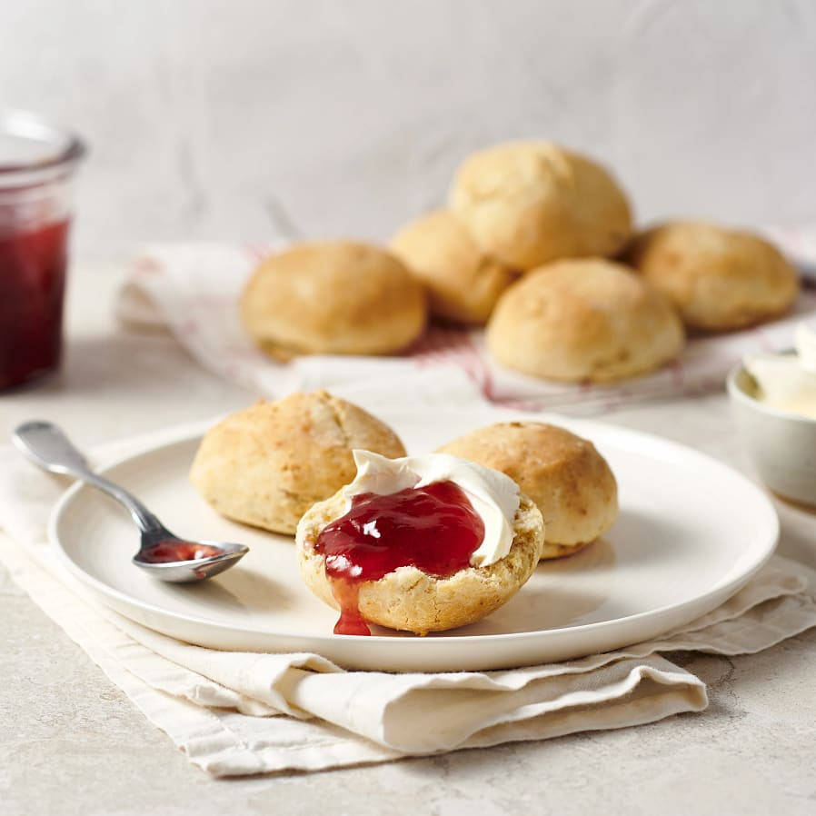

Scones

Scones are a very tasty and easy to make bread.
Ingredients
- 4 dl wheat
- 2 tsp baking powder
- 2 ml salt
- 50 g butter
- 2 dl milk
Do this
- Start the oven on 250°C.
- Mix wheat, baking powder and salt in a bowl. Add in butter and stir until the butter is disolved into the mixture. Add milk and stir quickly into a sticky dough.
- Make into 8 buns and add them to a baking sheet with baking paper. Bake in the middle of the oven for about 10-12 minutes.
- Serve with butter and cheese or jam and cream cheese.